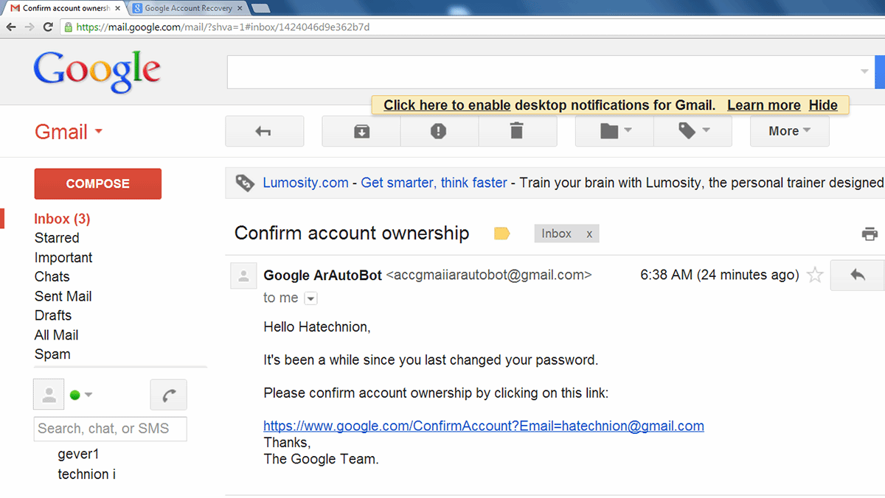

Case Study - Email Phishing attack
Case Scenario:
Imagine you receive an email seemingly from google, urging you to update your account information due to a security policy changing. The email appears genuine, with the google's email logo, professional language, and a link to a website that mimics google's email official page.
What May Happens if You Fall Victim to the Attack:
Financial Loss: The attacker gains access to your gmail account and may result in financial loss if you have money in your google account.
Data leak: Upon clicking the provided link, you are redirected to a fake website that requests your account credentials. By entering your information, you information, accounts, password may leaked if you have them saved in your google account.
Dealing with the problem:
1. Prevention:
Two-Factor Authentication (2FA): Enable 2FA wherever possible to add an extra layer of security to your accounts.
Alertness: Always check email senders, URLs, and attachments before taking any action.
2. Long-term Solutions:
BackUp: Having a backup ensures that you can recover your data and restore it to its previous state if you fall into those attack, also it can give you Ransomware Protection. Some phishing attacks involve ransomware, which encrypts your files and demands a payment to release them. If you have regular backups, you can restore your files without needing to pay the ransom.
Antivirus Software: Some Antivirus Software can stop Phishing and Email Impersonation Attacks Before They Reach your email or give you a warning.